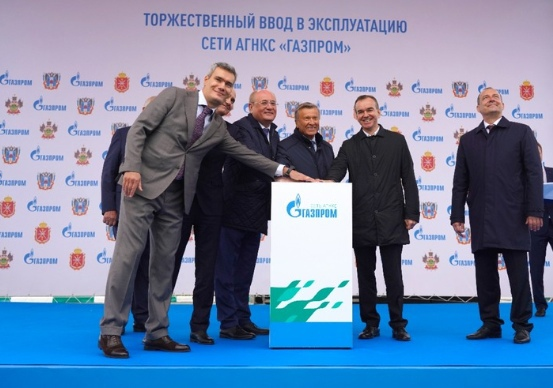
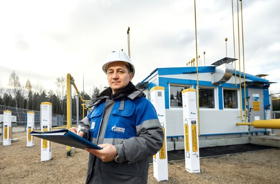
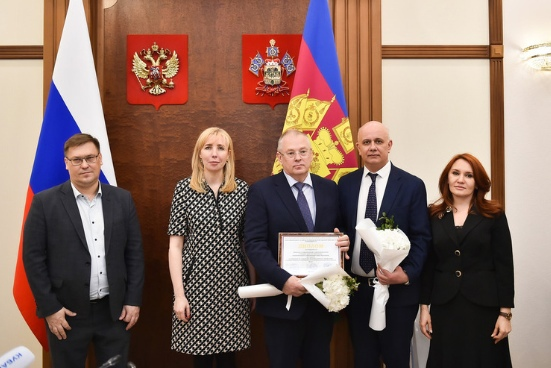
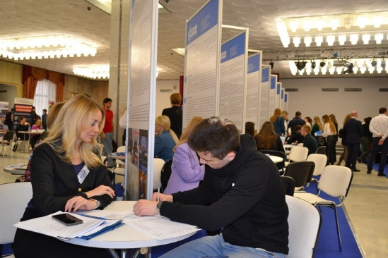
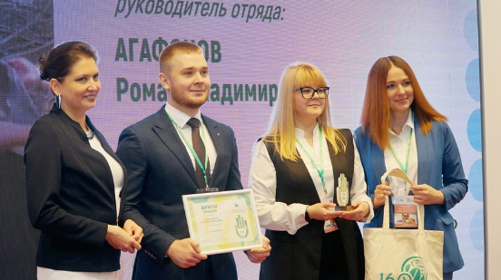

События
Сегодня в станице Павловской Краснодарского края в режиме телемоста состоялась торжественная церемония ввода в эксплуатацию девяти станций «Газпрома» для заправки автомобилей природным газом — в Краснодарском крае, Ростовской и Тульской областях.
Правление ПАО «Газпром» приняло к сведению информацию о ходе выполнения задач по догазификации в субъектах Российской Федерации — подведению сетевого газа к границам частных домовладений и котельным медицинских и образовательных учреждений без привлечения средств граждан и этих организаций.
Общество заняло первое место в Краснодарском крае в региональном этапе Всероссийского конкурса «Российская организация высокой социальной эффективности» в номинации «За сокращение производственного травматизма и профессиональной заболеваемости в организациях производственной сферы».
Мероприятие состоялась 16 марта в Российском университете нефти и газа им. И.М. Губкина.
Проект молодых специалистов компании победил в V Всероссийском конкурсе «Лучший эковолонтерский отряд» в номинации «Экомолодость».
